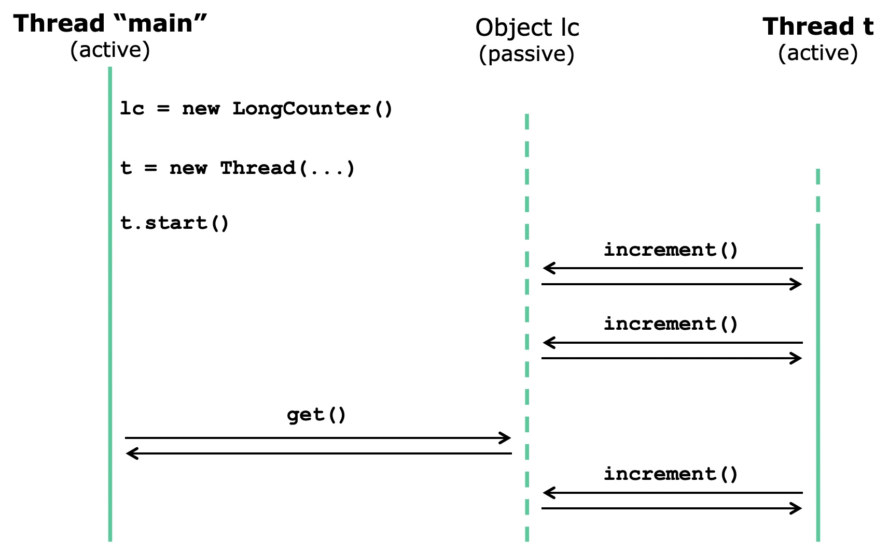
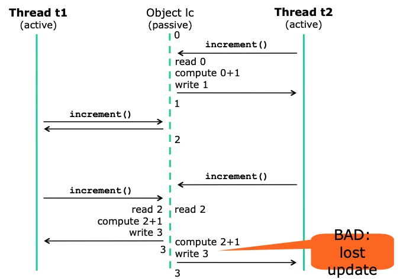
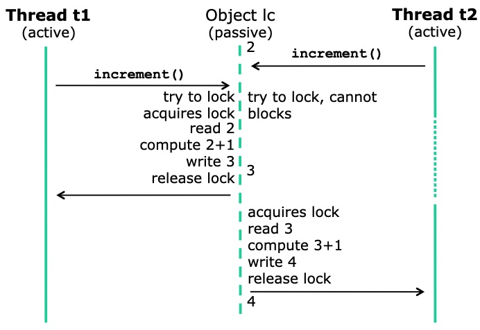

class: center, middle <!--- Kommentar i html format --> ## Practical Concurrent and Parallel Programming ### Kasper Østerbye ### IT University of Copenhagen ### Friday 2020-08-28 --- # Plan for today ### Meta - about how this course is organized ### Topics - Java threads - Java locking, the synchronized keyword - Threads for performance --- # The teachers * Course responsible: Kasper Østerbye * PhD 1989, Aalborg University * Programming languages and software understanding * Joined ITU in 2000 (but has been away for 5 years) * Co-teacher: Jørgen Staunstrup (will introduce himself later in the course) --- # Why this course? ### Parallel programming is necessary * The real world is parallel * Think of the atrium lifts: lifts move, buttons are pressed * Think of handling a million online banking customers * For performance * To share ressources (think virtual machines) ### It is easy, and disastrous, to get it wrong * Testing is even harder than for sequential code * You should learn how to make correct parallel code * in a real language, used in practice * You should learn how to make fast parallel code * and measure whether one solution is faster than another * and understand why --- # Course contents * Threads, locks, mutual exclusion, scalability * Java 8 streams, functional programming * Performance measurements * Tasks, the Java executor framework * Safety, liveness, deadlocks * Testing concurrent programs * Some more advanced concepts from Java and other languages --- # Learning objectives > ### See formal page in LearnIT ### Expected prerequisites * From the ITU course base: >Students must know the Java programming language very well, including inner classes and a first exposure to threads and locks, and event-based GUIs as in Swing or AWT.” * Today we will briefly review the basics of Java threads - Java synchronized methods and statements - Java’s final keyword - Java inner classes and lambdas --- # Standard weekly plan * Lectures Fridays in zoom - feedback on Thursdays (zoom) * Exercise hand-in: Thursday morning by 7 * On LearnIT, as a link to your itu github with solutions --- # Course information online * Course LearnIT page, restricted access: https://learnit.itu.dk/course/view.php?id=3017108 * Course gitrepo, public access: https://github.itu.dk/kasper/PCPP-Public - Overview of lectures and exercises - Lecture slides and exercise sheets - Example code - List of all mandatory reading materials --- # Exercises * There are 13 sets of weekly exercises * You are expected to work in groups of 2-3 students, and in teams of two groups. * Hand in the solutions through LearnIT * Each team will be given oral feedback on Thursday - a schedule is available. * Hand-ins: ≥6 must be submitted, ≥5 approved - otherwise you cannot take the course examination - failing to get 5 approved costs an exam attempt (!!) * Exercise may be approved even if not fully solved - It is possible to resubmit - Make your best effort: two serious attempts=one solved * What is important is that you learn --- # Ambition levels * We (teachers) acknowledge that you might have different ambition levels for this class and your education. * Exercises are in three ambition levels. * Green: “I want a 4, but can live with a 2”. * Yellow: “I want a 7, but hope for a 10”. * Red: “I will be disappointed if less than 10”. * Red must do all exercises, Yellow those marked Yellow and Green, and Green only need to do the Green. * Groups and teams must be same ambition level. * Oral feedback according to ambition. --- # Exam * A 30 hour take-home written exam/project - Electronic submission in LearnIT - Followed by random sample “cheat check” * Expected exam workload is 16 hours - Individual exam, no collaboration - All materials, including Internet, allowed - Always credit the sources you use - Plagiarism is forbidden - as always * The old exams are on the public homepage (or will soon be) --- # Stuff you need * Buy Goetz et al: Java Concurrency in Practice - From 2006, still the best on Java concurrency - Most contents is relevant for C#/.NET too * Free lecture notes and papers, see homepage * A few other book chapters, see LearnIT * Java 8 SDK installed on your computer - Java 7 or earlier will not work, later should be OK --- # What about other languages? * .NET and C# are very similar to Java - We will point out differences on the way * Kotlin, Scala, F#, ... build on JVM or .NET * C and C++ have some differences * GO, Rust, Python, ... --- # And now to concurrency and parallelism --- # Threads and concurrency in Java * A thread is - a sequential activity executing Java code - running at the same time as other activities * Threads communicate via fields - That is, by updating shared mutable state --- # A thread-safe class for counting ```java class LongCounter { private long count = 0; public synchronized void increment() { count = count + 1; } public synchronized long get() { return count; } } // TestLongCounter.java ``` * The state (field count) is private * Only synchronized methods read and write it --- # A thread created from a Runnable The thread’s behavior is in the run method ```java final LongCounter lc = new LongCounter(); Thread t = new Thread( new Runnable() { //An anonymous inner class, and an instance of it public void run() { while (true) lc.increment(); // When started, the thread will increment forever } } ); // TestLongCounter7.java ``` This only creates the thread, does not start it --- # Starting the thread ## in parallel with the main thread ```java public static void main(String[] args) ... { final LongCounter lc = new LongCounter(); Thread t = new Thread(new Runnable() { ... }); // previous slide t.start(); System.out.println("Press Enter ... "); while (true) { System.in.read(); System.out.println(lc.get()); } } ``` ```text Press Enter to get the current value: 60853639 103606384 263682708 ... ``` --- # Creating and starting a thread ### (and communicating via object)  --- # Java lambda expressions Instead of anonymous inner classes: ```java Thread t = new Thread( new Runnable() { public void run() { while (true) lc.increment(); } }); // TestLongCounter7.java ``` we use lambda expressions: ```java Thread t = new Thread(() -> { while (true) lc.increment(); }); //TestLongCounter.java ``` _Notice: all lambda expressions are made into anonymous classes, and all anonymous classes are given unique hidden names_ --- # Locks _Notice: This door does not lock anything. _ -- However, you can use locks to establish conventions for access to resources. --- background-image: url(img/DoorClosed_dimmed.jpg) # Locks and the synchronized statement Any Java object (door) can be used for locking The synchronized statement ```java synchronized (obj) { ... body ... } ``` - Blocks until the lock on obj is available - Takes (acquires) the lock on obj - Executes the body block - Releases the lock, also on return or exception (if the body is not run to its end) By consistently locking on the same object - one can obtain mutual exclusion, so - at most one thread can execute the code at a time --- # A synchronized method locks the “this” reference around body A synchronized instance method ```java class C { public synchronized void method() { ... } } ``` really uses a synchronized statement: ```java class C { public void method() { synchronized (this) { ... } } } ``` Q: What is being locked? (The entire class, the method, the instance, the Java system)? --- # What about synchronized static methods? A synchronized static method ```java class C { public synchronized static void method() { ... } } ``` locks on the class runtime object C.class: ```java class C { public static void method() { synchronized (C.class) { ... } } } ``` --- # Use explicit lock objects * So it is clear what object is being locked on * So only your methods lock on the object Good: ```java class LongCounter { public synchronized void increment() { ... } public synchronized long get() { ... } } ``` Better: ```java class LongCounterBetter { private final Object myLock = new Object(); // Explict lock object // Only these methods can lock on myLock public void increment() { synchronized (myLock) { ... } } public long get() { synchronized (myLock) { ... } } }// TestLongCounterBetter.java ``` --- # Multiple threads, locking Two threads incrementing counter in parallel: ```java final int counts = 10_000_000; Thread t1 = new Thread(() -> { for (int i=0; i < counts; i++) lc.increment(); }); Thread t2 = new Thread(() -> { for (int i=0; i < counts; i++) lc.increment(); }); // TestLongCounterExperiments.java ``` * Q: How many threads are running now? --- # Starting the threads, ### and waiting for their completion ```java t1.start(); t2.start(); ``` A thread completes when the lambda returns - To wait for thread t completing, call t.join() - May throw InterruptedException ```java try { t1.join(); t2.join(); } catch (InterruptedException exn) { ... } System.out.println("Count is " + lc.get()); ``` What is lc.get() after threads complete? - Each thread calls lc.increment() ten million times - So it gets called 20 million times --- # Removing the locking Non-thread-safe counter class: ```java class LongCounter2 { private long count = 0; public void increment() { count = count + 1; } public long get() { return count; } } ``` * Produces very wrong results, not 20 million: * Q: Why? ```text Count is 10041965 Count is 19861602 Count is 18939813 ``` --- # The operation ### `count = count + 1 is not atomic` * What count = count + 1 means: - read count - add 1 - write result to count * Hence not atomic So risk that two increment() calls will increase count by only 1 * NB: Same for `count += 1` and `count++` --- # No locking: lost update  --- # Mutual exclusion (using locking)  Locking can achieve mutual exclusion – Lock on the *same* object before all state accesses – Unfortunately, quite easy to get it wrong --- # Using threads for performance ### Example: Count primes 2 3 5 7 11 ... Count primes in 0...9999999: ```java static long countSequential(int range) { long count = 0; final int from = 0, to = range; for (int i=from; i < to; i++) if (isPrime(i)) count++; return count; } // TestCountPrimes.java ``` .right[Result is `664579`] * Takes 6.4 sec to compute on 1 CPU core * Why not use all my computer’s 4 (x 2) cores? - Eg. use two threads t1 and t2 and divide the work: t1: 0...4999999 and t2: 5000000...9999999 --- # Using two threads to count primes ```java final LongCounter lc = new LongCounter(); final int from1 = 0, to1 = perThread; Thread t1 = new Thread(() -> { for (int i=from1; i < to1; i++) if (isPrime(i)) lc.increment(); }); final int from2 = perThread, to2 = perThread * 2; Thread t2 = new Thread(() -> { for (int i=from2; i < to2; i++) if (isPrime(i)) lc.increment(); }); // TestCountPrimes.java ``` Same code twice, bad practice * Takes 4.2 sec real time, so already faster * Q: Why not just use a long count variable? * Q: What if we want to use 10 threads? --- # A side remark - on `final` Why do we use `final`? Consider this piece of code (pseudo java): ```java ()->int( incrementFrom(int start){ return () -> {++start}; } --- # Using N threads to count primes ```java final LongCounter lc = new LongCounter(); Thread[] threads = new Thread[threadCount]; for (int t=0; t < threadCount; t++) { final int from = perThread * t, // Last thread has to == range to = (t+1 == threadCount) ? range : perThread * (t+1); threads[t] = new Thread(() -> { // Thread processes segment [from,to) for (int i=from; i < to; i++) if (isPrime(i)) lc.increment(); }); } for (int t=0; t < threadCount; t++) threads[t].start(); ``` Takes 1.8 sec real time with threadCount 10 - Approx 3.3 times faster than sequential solution - Q: Why not 4 times, or 10 times faster? --- # Reflections: threads for performance * This code can be made better in many ways - Eg better distribution of work on the 10 threads - Eg less use of the synchronized LongCounter * Use Java 8 parallel streams instead _later in course_ * Proper performance measurements, _later in course_ * Very bad idea to use many (> 500) threads - Each thread takes much memory for the stack - Each thread slows down the garbage collector * Use tasks and Java “executors”, _later in course_ * More advice on scalability, _later in course_ * How to avoid locking _later in course_